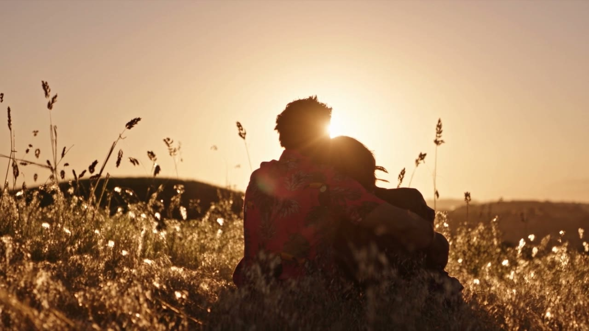
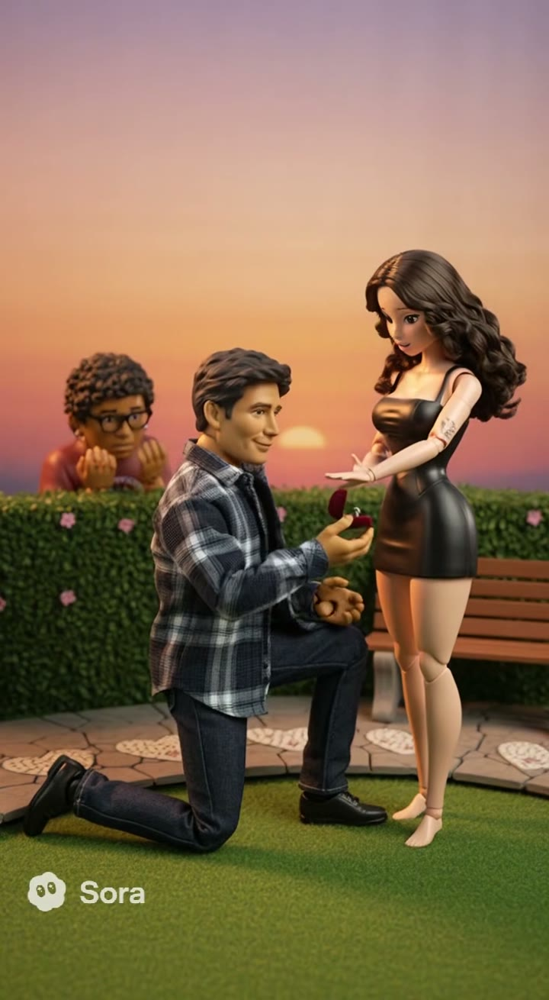
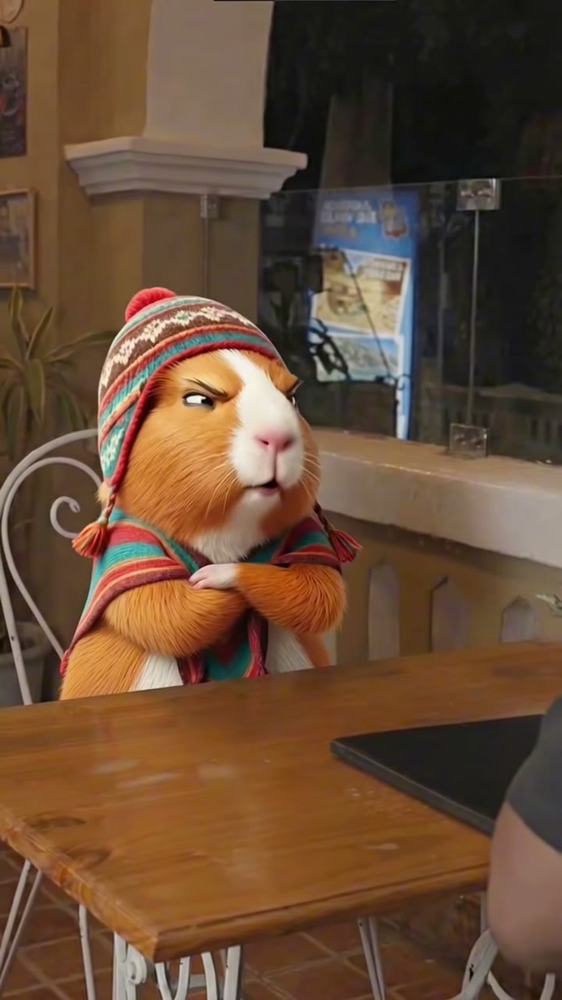
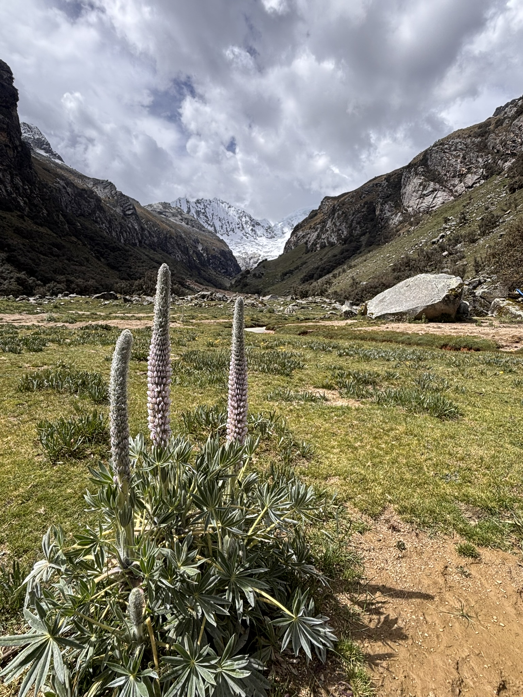
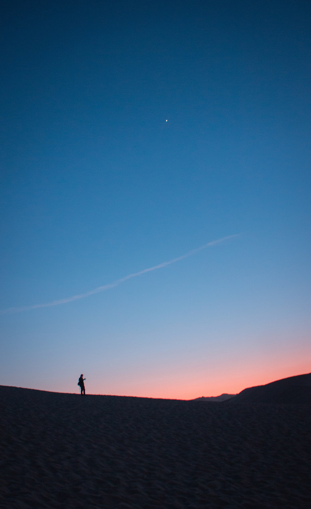

Taller Zombie Love Story
- Sábado 25 de octubre, 7 p. m. (Lima)
- 20 cupos
- En vivo por Zoom, 2 horas
- Grabación incluida
S/49S/79
preventa
Te enseño a crear los videos con IA que ves en mi TikTok, o te hago el tuyo. Desde Huaraz, Ica y Lima.
Soy Carlos. Entreno en Huaraz, hago cine con IA y mi primer video viral fui yo, convertido en héroe.
Sin cámara, sin actores y sin estudio: un prompt bien escrito y una app. Eso es lo que enseño en los talleres y lo que hago para parejas, familias y negocios.
Las vistas de cada video están en TikTok. Los personajes de TV los verás allá.
Los videos de clientes se muestran con su permiso.


Cada semana comparto el prompt del video que está sonando, con los ajustes que uso. Te llega por WhatsApp o por correo.
Recíbelo gratisLo que más me preguntan es cómo. Esto es lo que hay para aprenderlo conmigo, con precios en soles y pago por Yape, Plin o tarjeta.
S/49S/79
preventa
S/29
Pronto: un curso completo y un club con prompts cada semana. Déjame tu correo y te aviso.
Escribe
Un prompt es una descripción: quién sale, qué pasa, cómo se ve. Yo te doy los míos.
Genera
Uso Higgsfield. Con mi link tienes descuento; es un link de afiliado.
Publica
Súbelo a TikTok con el sonido que esté sonando. Así empecé yo.
Link de afiliado: si compras con él, yo gano una comisión y tú no pagas más.
Un video con IA de tu pareja, tu familia o el cumpleaños de alguien. Me mandas las fotos por WhatsApp y te lo entrego ahí mismo.

Carlos Quispe
Tato
Entreno en Huaraz. De ahí salió mi primer video viral: yo mismo, en el gym, convertido en un héroe.

Huaraz
donde empecé
A tres mil metros, con internet de pueblo, escribí prompts hasta que los videos salieron como quería.

Ica
donde grabo con clientes
Aquí están Valdelomar, el cuy y la laguna. Mis primeros videos para negocios fueron para gente de acá.
Lima
donde doy talleres
Los talleres en vivo y los trabajos para marcas los hago desde Lima, con Agentia.
Hice mi primer video zombie la misma noche del taller.
El video de nuestra boda lo vieron más personas que la boda.
Nos trajo gente al local en una semana.
Hice mi primer video zombie la misma noche del taller.
Alumna del taller, Lima (ejemplo)
El video de nuestra boda lo vieron más personas que la boda.
Cliente de video personalizado (ejemplo)
Nos trajo gente al local en una semana.
Restaurante en Ica (ejemplo)
¿Necesito saber editar? No. Escribes el prompt, la app genera el video y lo subes. Editar ayuda, pero no es necesario para empezar.
¿Qué programas usas? Higgsfield para generar, Seedance 2.0 y Sora para algunos estilos, y CapCut para cortar.
¿Cuánto cuesta generar un video? Depende de la app y la resolución: entre unos céntimos y unos soles por intento. En el taller te enseño a gastar poco.
¿Puedo usar la foto de otra persona? No, sin su permiso. Para los videos personalizados te pido confirmar que las personas que salen están de acuerdo.
¿Cómo pago? Yape, Plin o tarjeta. Te paso los datos por WhatsApp al confirmar.
¿En cuánto entregas? Según el plan: de dos a cinco días. Si quieres algo urgente, pregúntame antes.
¿Y si no me gusta el video? Cada plan incluye intentos. Si ninguno te convence, no te cobro el resto del trabajo.
¿Haces videos de personajes de TV? Para mi TikTok sí, como parodia. Para clientes solo trabajo con personas que dan su permiso.